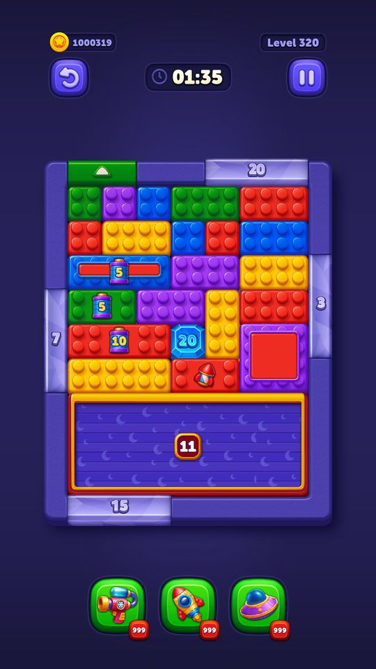
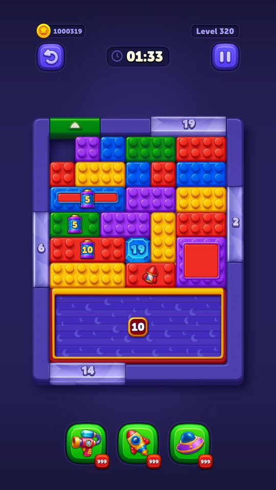
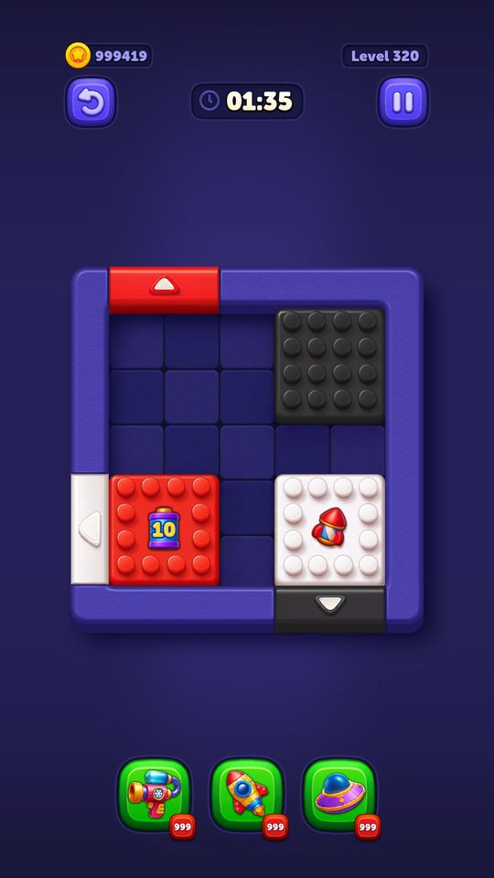
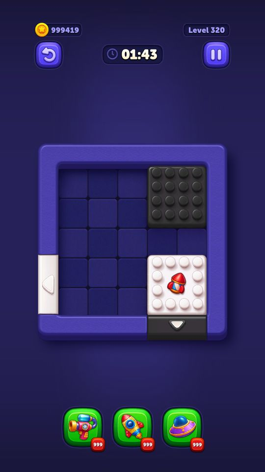
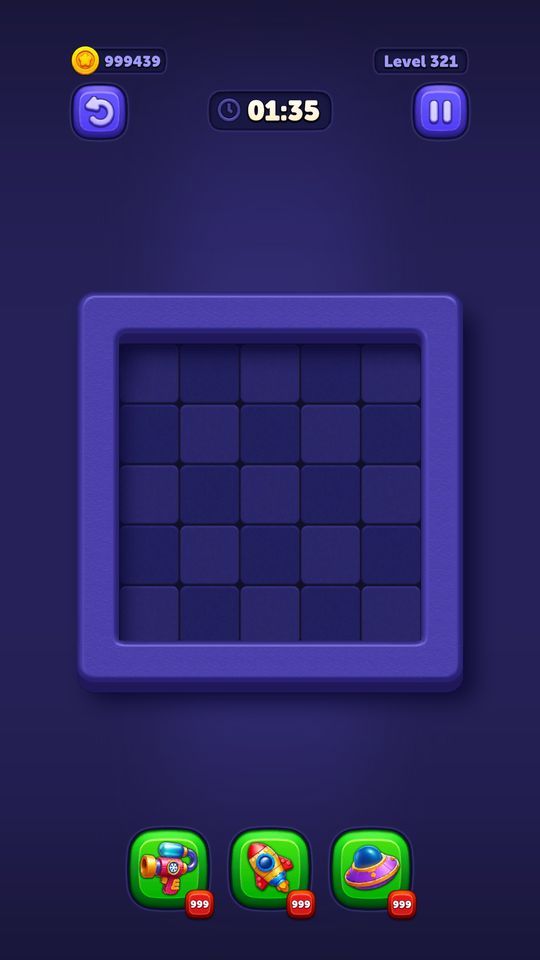

Luật chơi lõi (kéo khối ra cửa)
Block Out! là game xếp khối theo màu trong một lưới ô vuông.
Mô tả
- Block Out! là game xếp khối theo màu trong một lưới ô vuông.
- Mỗi màn có một bàn chơi hình chữ nhật (rộng 4–9 ô, cao 4–14 ô) chứa các khối nhiều ô ghép lại, mỗi khối mang một màu.
- Viền bàn có các cửa (door), mỗi cửa cũng mang một màu và chiếm nhiều ô liên tiếp.
- Người chơi kéo khối trượt trong lưới và đẩy nó ra khỏi bàn qua cửa cùng màu.
- Khối chỉ ra được khi cửa đủ rộng cho cạnh khối và đường ra không bị khối khác chắn.
- Dọn sạch mọi khối trước khi hết giờ là thắng.
Còn thiếu / chưa xác minh
Mở khóa & điểm vào
Có từ màn 1, không có điều kiện mở khoá. Kích thước bàn, số khối, số màu và thời gian đều lấy theo từng màn trong LevelsConfig + file bố cục t212-level-N.json.
Điểm vào:
- Nút Play ở màn Home
- Vào lại màn đang dở qua ContinuousLevels
- Màn đấu trong Masters Arena
Cách hoạt động
- GamePlayStateManager chuyển sang FromHomeToGamePlayState rồi LevelInit.
- LevelModelService lấy LevelConfigModel theo tiến độ người chơi, nạp bố cục từ Resources/DefaultLevels/<seedId>.json (hoặc từ persistent path nếu server đã đẩy bộ seed mới về).
- SpawnerSystem lần lượt dựng tường (SpawnWalls), ô nền (SpawnCells), tường trong (SpawnInnerWalls), cửa (SpawnDoors), khối (SpawnBlocks) rồi tới các cơ chế phụ: generator, thang máy, rèm, máy nghiền, generator trong bàn.
- BoardPositionManager giữ ánh xạ giữa toạ độ lưới và toạ độ thế giới.
- Khi vào ActivePlayState, LevelTimer bắt đầu đếm ngược theo levelDuration.
- GamePlayInputSystem nhận thao tác chạm: TouchDown tìm khối gần điểm chạm nhất trong bán kính SearchRadius, TouchMove trượt khối theo trục X và Y riêng biệt với va chạm CompositeCollider2D, TouchUp thả khối và kiểm tra xem nó có nằm trên cửa không.
- Nếu khối trùng màu cửa, vừa lọt cửa (DoesBlockFitThroughDoor) và đường ra không bị chắn (IsDoorObstructed) thì ExitDoor cho khối bay ra ngoài.
- Mỗi lần một khối rời bàn, LevelWinLoseHandler gọi CheckBlockCountAndLevelWin; hết khối là thắng.
- Hết giờ hoặc bom nổ là thua.
Luồng chi tiết theo code
GamePlayStateManager chuyển sang FromHomeToGamePlayState rồi LevelInit. LevelModelService lấy LevelConfigModel theo tiến độ người chơi, nạp bố cục từ Resources/DefaultLevels/<seedId>.json (hoặc từ persistent path nếu server đã đẩy bộ seed mới về). SpawnerSystem lần lượt dựng tường (SpawnWalls), ô nền (SpawnCells), tường trong (SpawnInnerWalls), cửa (SpawnDoors), khối (SpawnBlocks) rồi tới các cơ chế phụ: generator, thang máy, rèm, máy nghiền, generator trong bàn. BoardPositionManager giữ ánh xạ giữa toạ độ lưới và toạ độ thế giới. Khi vào ActivePlayState, LevelTimer bắt đầu đếm ngược theo levelDuration. GamePlayInputSystem nhận thao tác chạm: TouchDown tìm khối gần điểm chạm nhất trong bán kính SearchRadius, TouchMove trượt khối theo trục X và Y riêng biệt với va chạm CompositeCollider2D, TouchUp thả khối và kiểm tra xem nó có nằm trên cửa không. Nếu khối trùng màu cửa, vừa lọt cửa (DoesBlockFitThroughDoor) và đường ra không bị chắn (IsDoorObstructed) thì ExitDoor cho khối bay ra ngoài. Mỗi lần một khối rời bàn, LevelWinLoseHandler gọi CheckBlockCountAndLevelWin; hết khối là thắng. Hết giờ hoặc bom nổ là thua.
Ảnh chụp màn hình (5)
5 ảnh chụp trong game (LDPlayer, bản 1006, tài khoản thử level 320 → 350 (07/10/2026)). Bấm ảnh để phóng to; nhãn UC dẫn tới use case tương ứng.










Phần thưởng
Phần thưởng theo code
| Ngữ cảnh | Phần thưởng | Evidence |
|---|---|---|
| Thắng màn thường |  20Coin 20Coin | GameEconomyModel.RegularLevelWinCoinReward |
| Thắng màn Hard | 60Coin | GameEconomyModel.HardLevelWinCoinReward |
| Thắng màn SuperHard | 100Coin | GameEconomyModel.SuperHardLevelWinCoinReward |
Số liệu chính
| Chỉ số | Giá trị | Nguồn |
|---|---|---|
| Lý do kết thúc màn — chỉ có đúng hai cách thua: hết giờ và bom | None=0, Win=1, NoTime=2, Bomb=3 | LevelWinLoseReason — enum LevelWinLoseReason |
| Đo từ CellModels của 999 màn | rộng 4–9 ô, cao 4–14 ô | Kích thước bàn — appendix/levels.tsv |
Use case (10)
Bấm vào từng use case để mở. Mở/đóng tất cả
UC-01 Chạm và chọn khối
Các bước- GamePlayInputSystem.TouchDown(ray) bắn tia từ camera xuống mặt bàn
- TryFindClickedBlock tìm khối ngay dưới điểm chạm; không trúng thì FindNearestBlock / FindNearestBlockOverlapCircle quét vòng tròn bán kính GetSearchRadius()
- GetSearchRadius() đọc InputFeelingConfig.SearchRadius (mặc định 0.8 ô) — đây là biên độ 'chạm hụt vẫn bắt được khối'
- Trả về ClickedBlockState: CanMove / CanNotMove / NotFound
- CanMove thì SelectCurrentDraggingBlock(block); CanNotMove thì PlayCannotMoveAnimationForBlock (rung nhẹ báo khối bị khoá)
| Actor | Player |
|---|---|
| Trigger | Ngón tay chạm màn hình trong bàn chơi |
| Điều kiện | Trạng thái ActivePlayState, input đang bật |
| Kết quả | Khối được chọn và bám theo ngón tay, hoặc phát animation báo không di chuyển được |
| Quy tắc / số liệu | SearchRadius 0.8 và BlockSpeed 1000 lấy từ Resources/defaultconfigs/InputFeelingConfig.json. Khối có ArrowBlockObstacle chỉ nhận trục quy định (BlockMovementAxis Horizontal/Vertical); khối bị LockBlockObstacle hoặc IceBlockObstacle trả CanMove() = false |
| Evidence | GamePlayInputSystem.TouchDown; TryFindClickedBlock; FindNearestBlockOverlapCircle; GetSearchRadius; PlayCannotMoveAnimationForBlock; IceBlockObstacle.CanMove |
UC-02 Kéo khối trượt trong lưới
Các bước- TouchMove(ray) đổi điểm chạm sang toạ độ thế giới
- ExpSmoothLimited làm mượt chuyển động, giới hạn tốc độ tối đa theo InputFeelingConfig.BlockSpeed
- GetMaxAllowedXAndYSeparately tách chuyển động thành hai trục và cast riêng từng trục — nhờ vậy khối vẫn trượt được dọc tường thay vì kẹt cứng khi kéo chéo
- GetMaxAllowedDistanceWithCombinedCast dùng CompositeCollider2D của khối (hoặc cả nhóm khối dính nhau) để tìm quãng đường tối đa trước khi chạm vật cản
- MoveCombinedBlocks di chuyển cả nhóm nếu khối thuộc ConnectedBlockObstacle
- CheckShouldPlayDoorVacuumAnim: khi khối tới gần cửa cùng màu thì cửa phát animation hút vào
| Actor | Player |
|---|---|
| Trigger | Ngón tay di chuyển khi đang giữ khối |
| Điều kiện | Đã chọn được khối ở UC-01 |
| Kết quả | Khối trượt mượt, dừng lại khi chạm tường/khối khác, cửa cùng màu nhấp nháy gợi ý |
| Quy tắc / số liệu | Va chạm chạy trong FixedUpdate; chuyển động hiển thị làm mượt bằng hàm mũ trong FrameUpdate. Khối ArrowBlock bị khoá một trục |
| Evidence | GamePlayInputSystem.TouchMove; GetMaxAllowedXAndYSeparately; GetMaxAllowedDistanceWithCombinedCast; MoveCombinedBlocks; ExpSmoothLimited; CheckShouldPlayDoorVacuumAnim |
UC-03 Thả khối trúng cửa cùng màu, khối rời bàn
Các bước- TouchUp(ray) -> OnTouchUp(checkDoor: true)
- CheckSitOnAnyDoor đối chiếu ô lưới của khối với ô lưới của từng cửa
- CheckDoorPass kiểm tra màu khối == màu cửa
- DoesBlockFitThroughDoor so cạnh khối với bề rộng cửa (cửa 2 ô không cho khối cạnh 3 ô đi qua)
- IsDoorObstructed quét hướng ra xem có khối nào chắn giữa khối và cửa không
- Đạt hết thì ExitDoor(block, pivot, door, size, direction): khối chuyển BlockSortState MovingOutOfDoorVertical/Horizontal và bay ra
- Khối rời bàn -> LevelWinLoseHandler.CheckBlockCountAndLevelWin(block) và PowerUpController.OnBlockExitFromBoard()
| Actor | Player |
|---|---|
| Trigger | Nhả tay khi khối đang nằm đè lên cửa |
| Điều kiện | Khối cùng màu với cửa, không bị vật cản khoá |
| Kết quả | Khối biến mất khỏi bàn, mở đường cho các khối khác; tính vào điều kiện thắng |
| Quy tắc / số liệu | Màu khối theo enum BlockColorType (12 màu: Red, Blue, Yellow, Green, Purple, Orange, Pink, DarkBlue, Turquoise, DarkGreen, White, Black). Thực tế mỗi màn dùng trung bình 6,8 màu, tối đa 10 |
| Evidence | GamePlayInputSystem.OnTouchUp; CheckSitOnAnyDoor; CheckDoorPass; DoesBlockFitThroughDoor; IsDoorObstructed; ExitDoor; LevelWinLoseHandler.CheckBlockCountAndLevelWin |
UC-04 Thả khối không trúng cửa — khối tự về ô lưới
Các bước- OnTouchUp không tìm được cửa hợp lệ
- ForceSitBlock(block, checkDoor) canh khối về đúng tâm các ô lưới gần nhất
- ForceSitCombinedBlocks làm tương tự cho cả nhóm khối dính nhau
- CheckPositionsAreEmptyAndNonBlocked xác nhận các ô đích còn trống
- ClearAllVacuumAnims tắt hiệu ứng hút của cửa
| Actor | System |
|---|---|
| Trigger | Nhả tay khi khối không nằm trên cửa hợp lệ |
| Điều kiện | - |
| Kết quả | Khối nằm gọn trong lưới ở vị trí mới |
| Quy tắc / số liệu | Khối không bao giờ nằm lệch ô — mọi vị trí đều snap về lưới nguyên |
| Evidence | GamePlayInputSystem.ForceSitBlock; ForceSitCombinedBlocks; CheckPositionsAreEmptyAndNonBlocked; ClearAllVacuumAnims |
UC-05 Dọn sạch bàn — thắng màn
Các bước- CheckBlockCountAndLevelWin đặt cờ _checkBlockCountNextFrame
- Khung hình sau, CheckLevelEnd chạy IsAnyBlockOnTheBoard()
- Không còn khối -> _levelWinLoseReason = Win (1)
- Signal báo lên GamePlayStateManager -> ChangeState(WinState)
- BasicLevelManager.Win() đóng màn, LevelState = Win
| Actor | System |
|---|---|
| Trigger | Khối cuối cùng rời bàn |
| Điều kiện | Không còn khối nào trên bàn |
| Kết quả | Vào màn hình thắng, trao thưởng coin theo độ khó |
| Quy tắc / số liệu | Thưởng: màn thường  20 coin, Hard 60, SuperHard 100 (GameEconomyModel). Có delay _levelEndDelay để animation khối cuối chạy xong 20 coin, Hard 60, SuperHard 100 (GameEconomyModel). Có delay _levelEndDelay để animation khối cuối chạy xong |
| Evidence | LevelWinLoseHandler.CheckBlockCountAndLevelWin; CheckLevelEnd; IsAnyBlockOnTheBoard; BasicLevelManager.Win; GamePlayStateManager.WinState |
UC-06 Hết giờ — thua màn
Các bước- LevelWinLoseHandler.IsTimeUp() trả true khi _levelTimer.IsActive và remainingTime < 1
- CheckAndApplyTimeIsUp kiểm tra PowerUpController.IsThereActiveFlights() — nếu còn rocket đang bay thì hoãn kết thúc
- _levelWinLoseReason = NoTime (2)
- StateMachine chuyển sang StuckState
- StuckPopupType = NoTime, hiện popup mời dùng Play On
| Actor | System |
|---|---|
| Trigger | LevelTimer về 0 |
| Điều kiện | Vẫn còn khối trên bàn |
| Kết quả | Người chơi mất  1 mạng trừ khi mua Play On 1 mạng trừ khi mua Play On |
| Quy tắc / số liệu | IsTimeUp dùng ngưỡng remainingTime < 1 giây. Rocket đang bay được ưu tiên xử lý xong trước khi tuyên bố thua |
| Evidence | LevelWinLoseHandler.IsTimeUp; CheckAndApplyTimeIsUp; PowerUpController.IsThereActiveFlights; StuckPopupType |
UC-07 Bom nổ — thua màn ngay
Các bước- BombBlockObstacle.SecondUpdate() giảm bộ đếm mỗi giây
- Về 0 -> BombTimeUp() -> LevelWinLoseHandler.OnBombTimerUp()
- _levelWinLoseReason = Bomb (3)
- StuckPopupType = Bomb
| Actor | System |
|---|---|
| Trigger | Đồng hồ trên khối bom về 0 |
| Điều kiện | Màn có BombBlockObstacle (từ màn 120) |
| Kết quả | Thua ngay lập tức bất kể còn bao nhiêu thời gian màn |
| Quy tắc / số liệu | BombAnimationTime = 5 giây (hằng trong BombBlockObstacle) là khoảng animation đếm ngược cuối. Play On cho bom cộng bombAdditionalTime (server đang để 30 giây, mặc định client 15) |
| Evidence | BombBlockObstacle.SecondUpdate; BombTimeUp; LevelWinLoseHandler.OnBombTimerUp; LevelWinLoseReason.Bomb; BombBlockObstacle.PlayOnBomb |
UC-08 Khối bị kẹt không di chuyển được
Các bước- TryFindClickedBlock trả ClickedBlockState.CanNotMove
- PlayCannotMoveAnimationForBlock phát animation rung
- Khối không được gán làm khối đang kéo
| Actor | Player |
|---|---|
| Trigger | Chạm vào khối đang bị vật cản khoá |
| Điều kiện | Khối có IceBlockObstacle / LockBlockObstacle chưa mở |
| Kết quả | Phản hồi rõ ràng cho người chơi là khối này còn khoá |
| Quy tắc / số liệu | IceBlockObstacle.CanMove() = false tới khi phá hết lớp băng; LockBlockObstacle.CanMove() = false tới khi ghép đúng chìa |
| Evidence | GamePlayInputSystem.TryFindClickedBlock; PlayCannotMoveAnimationForBlock; IceBlockObstacle.CanMove; LockBlockObstacle.CanMove |
UC-09 Nhóm khối dính nhau di chuyển cùng lúc
Các bước- SelectCurrentDraggingBlock nhận ra khối thuộc nhóm nối
- GetMaxAllowedDistanceWithCombinedCast nhận cả List<CompositeCollider2D> của nhóm
- MoveCombinedBlocks(leaderNewPos) dịch toàn nhóm theo khối dẫn đầu
- Khi ra cửa, ForceSitCombinedBlocks canh lại phần còn lại
| Actor | Player |
|---|---|
| Trigger | Kéo một khối thuộc nhóm ConnectedBlock |
| Điều kiện | Màn có ConnectedBlockObstacle (từ màn 350) |
| Kết quả | Cả cụm khối di chuyển như một thể thống nhất |
| Quy tắc / số liệu | 109/999 màn có ConnectedBlockModels |
| Evidence | GamePlayInputSystem.MoveCombinedBlocks; GetMaxAllowedDistanceWithCombinedCast; ConnectedBlockObstacle |
UC-10 Tạm dừng và quay lại app giữa lúc đang kéo
Các bước- GamePlayInputSystem.OnApplicationPause(true) / OnApplicationFocus(false)
- DeselectCurrentDraggingBlock nhả khối đang kéo
- GamePauseHandler + GamePlayStateManager.OnApplicationPause dừng timer
- Quay lại -> GamePauseState rồi trở về ActivePlayState
| Actor | System |
|---|---|
| Trigger | OS đưa app xuống nền |
| Điều kiện | Đang giữ khối |
| Kết quả | Không bị mất khối hay trôi vị trí khi app bị gián đoạn |
| Quy tắc / số liệu | Trạng thái màn được lưu qua Serialization để mở lại app vẫn chơi tiếp được (xem ContinuousLevels) |
| Evidence | GamePlayInputSystem.OnApplicationPause; DeselectCurrentDraggingBlock; GamePlayStateManager.OnApplicationPause; GamePauseHandler |
Cấu hình (8)
Gộp mọi nguồn: const trong code, JSON mặc định trong Resources, bảng static, storage key, AB test, cờ server.
| Nguồn | Key | Kiểu | Giá trị | Ý nghĩa | Nơi định nghĩa |
|---|---|---|---|---|---|
| code const | GamePlayItemLayer | enum | Ground=0, OnGround=1, Piece=2, OnPiece=3, Overlay=4 | 5 lớp vẽ của bàn chơi, quyết định thứ tự chồng hình | Modules.Contexts.GamePlay.Generation.Scripts.GamePlayItemLayers |
| code const | BlockColorType | enum | None=-1, Red=0, Blue=1, Yellow=2, Green=3, Purple=4, Orange=5, Pink=6, DarkBlue=7, Turquoise=8, DarkGreen=9, White=10, Black=11 | 12 màu khối/cửa dùng chung cho toàn game | enum BlockColorType (xem appendix/enums.md) |
| code const | BlockPieceKind | enum | SingleBlock, DoubleHorizontal, TripleHorizontal, DoubleVertical, DoubleSquare, TopLeftSquare, TopRightSquare, BottomLeftSquare, BottomRightSquare, TripleVertical, Plus, TShape, LeftTShape, … | Các hình dạng khối dựng sẵn; BlockPieceKindFinder suy ra hình từ danh sách ô | enum BlockPieceKind; BlockPieceKindFinder |
| code const | BlockSortState | enum | Dragging=0, Static=1, MovingOutOfDoorVertical=2, UfoAnimation=3, MovingOutOfDoorHorizontal=4 | Trạng thái vận động của một khối | enum BlockSortState |
| code const | ClickedBlockState | enum | None=0, CanMove=1, CanNotMove=2, NotFound=3 | Kết quả của thao tác chạm tìm khối | enum ClickedBlockState |
| code const | LevelWinLoseReason | enum | None=0, Win=1, NoTime=2, Bomb=3 | Lý do kết thúc màn — chỉ có đúng hai cách thua: hết giờ và bom | enum LevelWinLoseReason |
| asset | Bố cục màn | json | 999 file t212-level-N.json trong Resources/DefaultLevels (tổng 2.204 file kể cả .meta và các bộ cũ t140/t141/t142/t160) | Toàn bộ thiết kế màn nằm sẵn trong APK, không cần tải thêm | Assets/Resources/DefaultLevels/ |
| asset | Kích thước bàn | int | rộng 4–9 ô, cao 4–14 ô | Đo từ CellModels của 999 màn | appendix/levels.tsv |
Giao diện (UI)
| Element | Class | Mục đích |
|---|---|---|
| Bàn chơi | Modules.Contexts.GamePlay.Board.Scripts.BoardPositionManager | ánh xạ ô lưới ↔ toạ độ thế giới |
| Khối | Modules.Contexts.GamePlay.Generation.Scripts.Block.BlockPieceItemView | vẽ khối, viền, chấm gợi ý |
| Cửa | Modules.Contexts.GamePlay.Generation.Scripts.DoorPieceItem | cửa ra theo màu |
| Đồng hồ màn | Modules.Contexts.GamePlay.UI.InLevelTopRightUIController | hiển thị thời gian còn lại |
| Thứ tự vẽ | Modules.Contexts.GamePlay.Common.Scripts.GamePlaySortOrderConfig | 30+ lớp sort order (Cell, WallInner, BlockInner, BlockTop, DoorTop…) |
Chưa đọc được / ghi chú
- Không đọc được thuật toán sinh bố cục màn: bố cục là dữ liệu tĩnh do công cụ LevelEditor nội bộ tạo, client chỉ nạp lại.
- Hằng số vật lý của CompositeCollider2D (bán kính bo, độ dày) nằm trong prefab/ScriptableObject chứ không phải trong code, chưa dò hết.
Tính năng liên quan
Vòng đời màn chơi Vật cản và cơ chế màn Sinh và phân phối màn chơi Booster trong màn (UFO / Rocket / Time Freeze) Power-up sinh trong bàn (Rocket / Duration) Điều khiển và cảm giác chạm
Nguồn đã đọc
- PseudoC/Assembly-CSharp/Modules/Contexts/GamePlay/Input/GamePlayInputSystem.c
- PseudoC/Assembly-CSharp/Modules/Contexts/GamePlay/Levels/LevelWinLoseHandler.c
- PseudoC/Assembly-CSharp/Modules/Contexts/GamePlay/Generation/Scripts/SpawnerSystem.c
- Assets/Resources/DefaultLevels/t212-level-*.json
- appendix/levels-summary.md
- appendix/enums.md